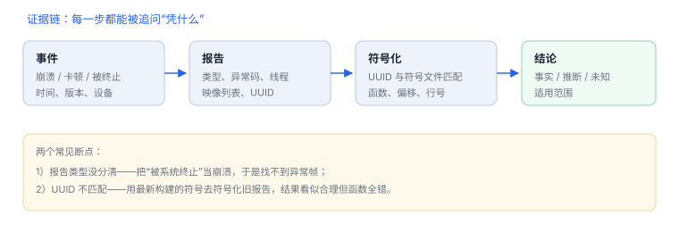

系统诊断与追踪
报告是证据材料，读法比工具更重要
崩溃报告不是“错误信息”，而是一份带时间、类型、线程状态与二进制信息的现场记录。会读它的人能在十分钟内缩小范围，不会读的人只能反复猜测。
1. 先看报告类型
| 类型 | 关键字段 | 常见原因 |
|---|---|---|
| 异常崩溃 | 异常类型、终止原因、触发线程回溯 | 空引用、越界、断言、未捕获错误 |
| 无响应/卡顿 | 采样到的线程栈、主线程状态 | 主线程阻塞、长时间同步 I/O |
| 被系统终止 | 终止原因码、内存压力标记 | 内存超限、后台时间耗尽 |
| 启动超时 | 启动阶段标记、耗时 | 初始化过重、启动期同步等待 |
| 内核崩溃 | panic 字符串、回溯 | 驱动或内核缺陷，用户侧无法修复 |
类型判断错了，后面的分析全部作废：把“被系统终止”当崩溃去查代码，会浪费大量时间。
2. 读一份报告的固定顺序
- 时间与版本：系统版本、应用版本与构建号、设备型号。没有这些，结论无法复现。
- 异常与终止原因：先确定“谁结束了这个进程”。
- 触发线程的回溯：看顶部若干帧，识别是自己的代码还是系统框架。
- 所有线程：死锁与资源竞争的证据常在其它线程里。
- 二进制镜像列表：确认加载了哪些库、UUID 是否与本地符号匹配。
不要把“崩溃在系统框架”当成系统的问题
系统框架通常在替调用方执行非法操作。回溯往下看几帧，往往能找到真正的调用来源。
系统框架通常在替调用方执行非法操作。回溯往下看几帧，往往能找到真正的调用来源。

3. 符号化需要什么
- 与该次构建完全匹配的符号文件或调试信息，按 UUID 对应；版本号相同不等于镜像相同。
- 构建产物需要归档：发布包、符号文件、构建号、提交记录一一对应。
- 同一份代码的不同架构、不同优化级别产物不同，不能交叉使用符号。
核对镜像 UUID 与符号文件
dwarfdump --uuid /path/to/YourApp.app/YourApp
dwarfdump --uuid /path/to/YourApp.app.dSYM4. 报告里的隐私
报告可能包含文件路径、用户名、URL 参数、界面文本。对外提交或接入第三方分析前，应做脱敏并确认合规要求。内部排障同样要避免把包含真实用户数据的报告随意转发。
5. 可验证实验
- 在自有样例中制造一次空引用崩溃，收集报告并按上述顺序写出五分钟结论：类型、触发线程、首个自有帧、版本。
- 制造一次主线程长时间阻塞，比较卡顿报告与崩溃报告在字段上的差异。
- 在后台加载大量数据直至被终止，确认终止原因字段，并验证“没有崩溃回溯”不等于“代码没有问题”。
6. 排障清单
- 现象能否稳定复现？复现条件是否写清（设备、版本、数据规模）？
- 报告类型与时间线是否一致？
- 是否有相邻版本同样问题？回归范围是什么？
- 修复后是否在相同条件验证，并保留前后证据？
7. 报告类型：先分类，再读栈
| 类型 | 关键字段 | 常见原因 |
|---|---|---|
| 异常崩溃 | 异常类型、触发线程 | 空指针、越界、断言 |
| 卡顿/无响应 | 主线程采样栈 | 主线程阻塞 |
| 被终止 | 终止原因码 | 看门狗、内存、持锁 |
先看类型
把“被终止”当崩溃查，会在没有异常帧的报告里空转。
把“被终止”当崩溃查，会在没有异常帧的报告里空转。
8. 一次真实排查记录：符号化后函数名离谱
- 现象：报告能符号化，但函数名与业务完全对不上。
- 先怀疑 UUID：符号文件必须与崩溃时的二进制 UUID 一致，版本号相同也可能不同。
- 核对 UUID：对比报告里的镜像 UUID 与本地 dSYM 的 UUID。
- 换文件重试：用归档里对应构建的符号文件重新符号化。
- 结论与限制：记录“符号文件与构建不匹配”，并注明行号仅供参考。
9. 数据细节：符号化需要什么
| 输入 | 来源 | 缺失后果 |
|---|---|---|
| 崩溃报告 | 设备/收集平台 | 无地址可查 |
| 镜像 UUID | 报告头部 | 无法匹配符号 |
| dSYM | 构建归档 | 只能看地址 |
| 系统符号 | 对应系统版本 | 系统帧显示为未知 |
10. 自测
- 为什么“版本号一致”不足以符号化历史报告？
- 被系统终止与异常崩溃在证据上有哪些关键差异？
- 崩溃发生在系统框架里时，下一步应该看什么？